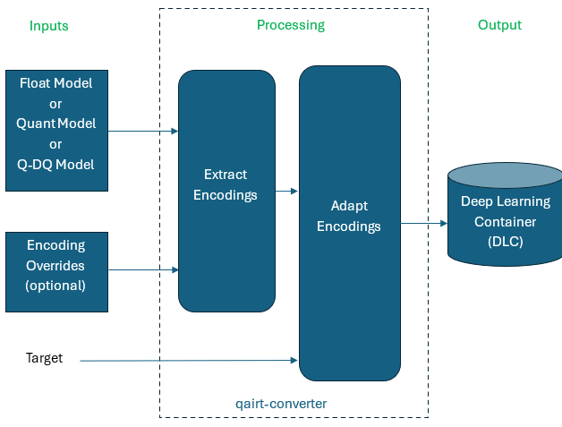
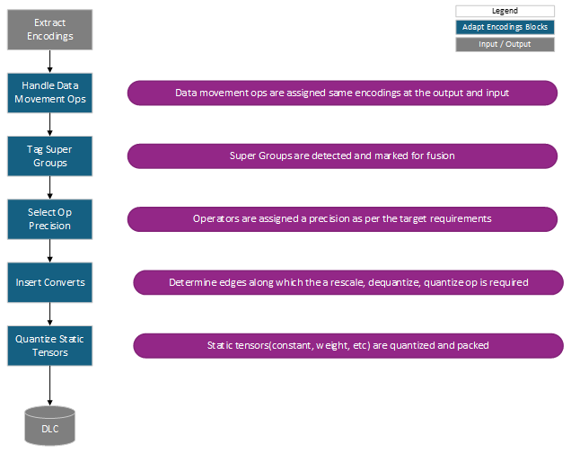
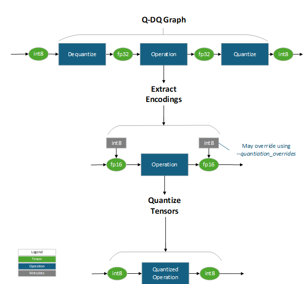

QAIRT Quantization Specification¶
Document Version |
QAIRT SDK Release |
AIMET SDK Release |
|---|---|---|
v0.1 (Alpha) |
v2.36 |
v2.3 |
Introduction¶
Most neural network models use 32-bit floating point representation for weights and activations. However, these high-precision representations are often optimized for inference, especially when deploying models on edge devices where available memory and compute resources are more limited. Quantization is a model compression technique used to lower memory footprint, power consumption, data transfers and improve inference speed by reducing the precision of the model’s weights and activations with minimal accuracy loss. For more information on quantization techniques refer to the Appendix of this document.
The goals of this document are:
To describe the QAIRT workflow for quantized networks and explain how quantization data is processed by the QAIRT stack.
To document the quantization encoding formats supported by the QAIRT stack for benefit of customers using third-party quantization tools. Note that Qualcomm’s AI Model Efficiency Toolkit (AIMET) supports these output formats for seamless operation with QAIRT.
Converter quantization workflow¶

Quantization workflow¶
The above figure shows the high-level workflow for converting from framework model format to a Deep Learning Contained (DLC). The qairt-converter converts a model for source framework format into a DLC which can be used for inference.
Quantization inputs¶
The qairt-converter accepts the following inputs:
Model input (mandatory)
Float model: A 32-bit floating point model (no quantization information)
Quantized model: A model containing quantized nodes. Ex: TFLite models.
Q-DQ model: A model where quantization information is signaled using Q-DQ nodes. E.g. an ONNX model with QuantizeLinear, DequantizeLinear
Note
For more details see Appendix B: Quantized Model Formats
Quantization Encoding Overrides (optional)
Encoding Overrides: a JSON file with quantization information for each tensor may be passed using the –quantization_overrides option. Quantization information in the encodings override file will take precedence over information in source model file. See Quantization Overrides in the QAIRT SDK documentation for detailed information.
Note that AIMET can be used to perform quantization and to produce a quantization overrides JSON file. Quantization information from third-party tools can be specified in the same format.
See JSON Schema Version 2.0.0 for a detailed description of the encoding file format.
Target (optional)
The target backend (HTP, LPAI, etc) can be specified using –target_backend option. Run qairt-converter –help for additional details on it. When the target device is provided, additional target-specific processing during the conversion processing is performed. Without target device information, only target-agnostic quantization will be performed.
Examples commands:
- Converting a 32-bit floating-point model with quantization overrides file
qairt-converter -i model.onnx --quantization_overrides model.encodings –-target_backend=HTP - Converting an ONNX Q-DQ model
qairt-converter -i model_qdq.onnx –-target_backend=HTP
Quantization processing¶
Quantization processing by the qairt-converter consists of two steps: quantization extraction and quantization adaptation.
The qairt-converter first extracts quantization encoding information from the source model and encoding overrides file (if present). Note that quantization information in the source model can exist at different granularities such as per-tensor, per-channel, per-block, etc… See Classification of Quantization Techniques for more information.
If a tensor has encoding information in both the model and overrides file, the overrides file will take precedence. See JSON Schema and Quantized Model Formats for more details.
Next, target-specific processing is performed, and the resulting quantization information is applied to tensors. When encodings associated with an operation cannot be mapped directly to the target device the encodings are adapted to the specified target. The adaption process has a defined set of rules that are documented in Target Specific Processing.
Quantization outputs¶
DLC - The output of the qairt-converter is a DLC ready for inference or compilation with the QAIRT stack.
Target specific processing¶
During target-specific processing, the quantization information extracted from processing the source model and overrides files is compared with the supported datatypes and operations on the specified target. If the extracted quantization information cannot be directly mapped, quantization information is adapted.
The following guidelines are used when adapting an encoding to a target.
32-bit floating point tensors are assigned float16 precision (default precision for the targets supported by QAIRT).
Tensors with no encoding information are treated as 16-bit floating point.
If the extracted quantized encoding if not supported by the target, the qairt-converter will fall back to a higher precision (that is supported on the target) in order to maintain accuracy. Precision precedence order is: float32, float16, int32, int16, int8, int4, and int2 (from highest to lowest).
The figure below shows the processing steps involved in adapting quantization encodings for a target. Steps include handling for data movement ops, supergroups, promotion and assignment of encodings, inserting appropriate conversion ops, quantizing static tensors, etc… and are detailed below.

Adapt Encodings – Algorithm¶
Handle data movement ops¶
Assign quantization encoding to the tensors associated with data movement ops and ensure matching quantization encodings are assigned along the chain of data movement operations. Operations that do not fall in the category of data movement ops are unaffected. List of Data Movement Ops.
Rules:
Quantization encoding of the input and output tensor of data movement operations must be equivalent.
A continuous sequence, or chain, of data movement ops is uniformly assigned the same encoding value as the range is not expected to change within the chain.
When different bit widths are detected at input and output of the op or chain of ops, the module assigns the minimum bit width for that op or group. This may result in a ConvertOp or CastOp at the start or end of the chain.
Tag super groups¶
A super group is a subgraph which executes in the same precision from start to end. Super groups are identified and tagged at this stage. Super groups are used to:
Avoid quantization noise by holding intermediate tensor data in higher precision to improve accuracy.
Enable targets to fuse the subgraph, when possible, to improve performance.
For example, the Conv->ReLU pattern will be detected and marked in the DLC so that fusion can be performed during target compilation.
Super groups are target specific. A complete list of the super groups can be found in Super groups. Tools like AIMET simulate super group patterns during quantization and calibration for improved accuracy and performance.
Rules:
The super group pattern must be supported by the target (Super groups).
Quantization encoding must be only specified for tensors at the start and end of the super groups, and no encoding must be specified for intermediate tensors.
For a sequence of ops to qualify as a super group the intermediate tensors must not be consumed outside of the super group ops. (For example, in the Add->Relu sequence the tensor between Add and Relu)
The super group operator dimensions and other attributes must be supported by the specified target.
Select op precision¶
Each target supports operations in different precisions (datatype, bit width, symmetry, etc) as tabulated in the Backend Supplemental Op Definition for each target. Tensors with missing quantization encoding information are assigned the default, float 16 datatype. For each op, the selection process determines if the encoding is supported by the target. If the encoding is supported, then it is used as-is. If the encoded precision is not supported, the precision will fall back to the nearest supported higher precision. Precision precedence order is: float32, float16, int32, int16, int8, int4, and int2 (from highest to lowest). If a higher precision is not available, it is reported as an error.
Rules:
Tensors with no encoding are first assigned float16 encoding (default). At this point all tensors must have an assigned encoding.
Quantization encoding is assigned to tensors and then ops connected to that tensor are evaluated to ensure a matching kernel is available on a backend for execution.
When a matching kernel is not available, iteratively, look for nearest higher precision kernel.
Checks performed when finding a matching a kernel.
When the user provided Symmetry is not supported it is an error.
When user provided encodings do not meet the granularity (per-tensor, per-channel or per-block) requirements then it is an error.
When the user provided y_scale does not meet constraint specified by the target then, it is an error unless it can be rescaled to match the desired range for the selected bit width.
When the user provided sign of the output_dtype does not match then, a kernel with opposite sign is looked for by changing the offset value.
When the user provided bit width is not supported by the kernel even after changing the sign then, higher bit width is looked for by repeating the steps from 1 to 5.
Insert converts¶
For every tensor where the tensor’s producer and consumer operations have different datatype requirements an appropriate Convert (rescale, quantize, or de-quantize) or Cast Op is inserted between ops.
Rules:
Insert a convert or cast op from tensor datatype present in the model to a user specified datatype
If the selected datatype is different from user specified datatype, then another conversion is done from user specified to selected datatype.
Quantize static tensors¶
Quantize static tensor values and store to avoid inserting a conversion op. This step helps reduce runtime cycles.
Rules:
Static tensors are quantized using the precision selected in Select Op Precision. When quantization bit width is less than the 8-bit multiple elements may be packed in packed into 8-bit. For example: two 4-bit elements can be packed in one 8-bit datatype.
Appendix A: Classification of quantization techniques¶
Quantization can be categorized based on the aspects of the model it affects and the methods it uses:
Based on Scope
Weight Quantization: Reduces the precision of weights, which represent learned parameters. Weight quantization is particularly effective because weights are fixed after training.
Activation Quantization: Reduces the precision of activation, which represents intermediate outputs of the model during inference. Activation quantization is more challenging due to dynamic data ranges.
Bias Quantization: Reduces precision of bias. Quantization of bias depends on weight and activation quantization.
Based on Granularity
Per Tensor Quantization: The entire tensor (weights or activations) shares a single scaling factor. Example JSON
Per Channel Quantization (PCQ): Each output channel of a layer has its own scaling factor. Example JSON
Block Quantization (BQ): Quantizes weights or activations in blocks rather than per tensor/channel. For BQ encodings, QAIRT supports offsets of both int and float32. Example JSON Example JSON for float BQ
Low Power Block Quantization (LPBQ): Encodings at a lower bit width are determined and then adjusted such that they lie on a common higher bit width per channel grid. Example JSON
Appendix B: Quantized model formats¶
Quantization information can be provided in the model source graphs using Q-DQ nodes or using quantized operations depending on the source framework being used.
The following table lists the combinations of inputs supported by the qairt-converter for each framework.
Framework |
Formats |
Quantization Granularity |
|---|---|---|
ONNX |
Float model, Q-DQ model |
Per-tensor, Per-channel, Per-block |
TensorFlow |
Float model, FakeQuant model |
Per-tensor, Per-channel |
TFL |
Float model, Quantized model |
Per-tensor, Per-channel |
PyTorch |
Float model |
Per-tensor, Per-channel |
ONNX¶
A sequence of QuantizeLinear and DequantizeLinear (Q-DQ) nodes are used in the ONNX graph to specify quantization information. During model conversion in qairt-converter, quantization information from Q-DQ sequence is extracted as metadata and the corresponding QuantizeLinear and DequantizeLinear nodes are folded to produce a quantized graph.
For example, a ReLU node between a dequantize and quantize node, int8 → Dequantize → fp32 → ReLU → fp32 → Quantize → int8 is treated equivalent to a quantized ReLU operator int8-> ReLU → int8. First, quantization encoding from Q-DQ nodes is extracted and stored as metadata (also referred to as Encoding) attached to the corresponding tensor. Next, the encoding is applied to the tensor resulting in a quantized graph.
The following figure shows how the Q-DQ nodes are folded to extract quantization encoding and then produce a quantized graph. Encoding collected from the source model may be overridden using the –quantization-overrides option.

Extract encodings from Q-DQ model and quantized tensors to build a quantized graph¶
For more information about ONNX Q-DQ, see QuantizeLinear - ONNX 1.18.0 documentation.
TFLite¶
TFLite uses quantized nodes to convert floating-point models to lower precision. The TFLite model, including its quantized nodes, is converted into a DLC. This process involves deriving quantization encodings using TFLite quantization parameters (scale, zero-point) before associating it with the tensor in the DLC. Encodings collected from the source model may be overridden using the –quantization-overrides option.
TensorFlow¶
The FakeQuant node in TensorFlow is used for quantization-aware training. It simulates the effects of quantization during training, allowing the model to learn the quantization effects and potentially achieve higher accuracy when quantized. Quantization information present in the FakeQuant node stored as quantization encoding metadata (preceding figure shows int8 encodings stored as metadata associated with float-16 tensors). Encoding collected from the source model may be overridden using the –quantization-overrides option. For more information on FakeQuant see tf.quantization.fake_quant_with_min_max_args.
Appendix C: JSON schema version 2.0.0¶
JSON schema uses keys which are closely aligned with attributes of the ONNX QuantizeLinear operators detailed below.
name: name of the tensor
output_dtype: tensor data type with bit-width appended. Valid values for this field are listed. “int4”, “uint4”, “int8”, “uint8”, “int16”, “uint16”, “int32”, “uint32”, “float32”, “float16”.
y_scale: tensor data is quantized with this scale value.
y_zero_point (optional, default = 0): tensor data is quantized with the provided zero point. Internally this is stored as offset = - y_zero_point. Its value may be used to interpret symmetry of the quantized data.
axis (optional): Set when per-channel quantization or block quantization is used. For per-channel quantization, it indicates the channel axis along which the scale values are specified. For block quantization, (when block_size is specified) it indicates the tensor axis along which blocking is done.
block_size (optional): Set only when block quantization is used. Size of the block along the specified axis.
per_channel_float_scale (optional): TBD
per_block_int_scale (optional): Applicable when Low Power Block Quantization is used, for which block_size must be provided. An integer scale is assigned per block.
Per tensor quantization encoding example¶
{
“name”: “activation”,
“output_dtype”: “uint8”,
“y_scale”: 1.0,
“y_zero_point”: 128
}
Per channel quantization encoding example¶
Example encodings for channel axis = 0 and length = 3.
{
“name”: “conv.weight”,
“output_dtype”: “int8”,
“y_scale”: [
0.0050100767984986305,
0.0017133733490481973,
0.0017133733490481973,
]
“axis”: 0
}
Blockwise quantization encoding (BQ) example¶
{
“name”: “conv22.weight”,
“output_dtype”: “int4”
“y_scale”: [
[0.01, 0.02],
[0.03, 0.04],
[0.05, 0.06]
],
“y_zero_point”: [
[0, 0],
[0, 0],
[0, 0]
],
“axis”: 1,
“block_size”: 32,
}
Blockwise quantization encoding (BQ) with float offset example¶
{
“name”: “conv22.weight”,
“output_dtype”: “int4”
“y_scale”: [
[0.01, 0.02],
[0.03, 0.04],
[0.05, 0.06]
],
“y_zero_point”: [
[-0.16, 0.24],
[-0.35, 0.13],
[-0.14, 0.37]
],
“axis”: 1,
“block_size”: 32,
}
Low power blockwise quantization (LPBQ) example¶
{
“name”: “conv2.weight”,
“output_dtype”: “int4”
“per_channel_float_scale”: [
0.01, 0.02, 0.03
],
“per_block_int_scale”: [
[1, 2, 16],
[2, 16, 7],
[16, 3, 1]
],
“offset”: 0,
“block_size”: [1, 3],
}
Appendix D: Super groups¶
Super groups are listed per target in this section.
HTP super groups¶
The following table lists the super groups for HTP backend. These super groups are supported by Hexagon architecture version greater than v73.
Super group patterns |
|---|
QNN_OP_ELEMENT_WISE_ADD + QNN_OP_RELU |
QNN_OP_CONV_2D + QNN_OP_HARD_SWISH |
QNN_OP_CONV_2D + QNN_OP_PRELU |
QNN_OP_CONV_2D + QNN_OP_RELU_MIN_MAX |
QNN_OP_CONV_2D + QNN_OP_RELU |
QNN_OP_TRANSPOSE_CONV_2D + QNN_OP_RELU |
QNN_OP_FULLY_CONNECTED + QNN_OP_RELU |
Appendix E: Data movement ops¶
Data movement ops must have the same input and output quantization encodings.
HTP data movement ops¶
The following is the complete list of data movement ops supported by HTP.
Data Movement Ops |
|---|
QNN_OP_GATHER |
QNN_OP_GATHER_ELEMENTS |
QNN_OP_GATHER_ND |
QNN_OP_TOP_K |
QNN_OP_BATCH_TO_SPACE |
QNN_OP_CHANNEL_SHUFFLE |
QNN_OP_SPACE_TO_BATCH |
QNN_OP_TILE |